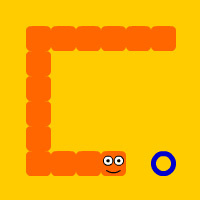

Гра змійка, її історія та реалізація за допомогою JavaScript
Snake (Пітон, Удав, Змійка і ін.) - комп'ютерна гра, що виникла в середині або в кінці 1970-х.
Гравець управляє довгою, тонкою істотою, що нагадує змію, яка повзає по площині (як правило, обмеженою стінками), збираючи їжу (або інші предмети), уникаючи зіткнення з власним хвостом і краями ігрового поля. У деяких варіантах на полі присутні додаткові перешкоди. Кожен раз, коли змія з'їдає шматок їжі, вона стає довшою, що поступово ускладнює гру. Гравець управляє напрямком руху голови змії (зазвичай 4 напрямки: вгору, вниз, вліво, вправо), а хвіст змії рухається слідом. Гравець не може зупинити рух змії.